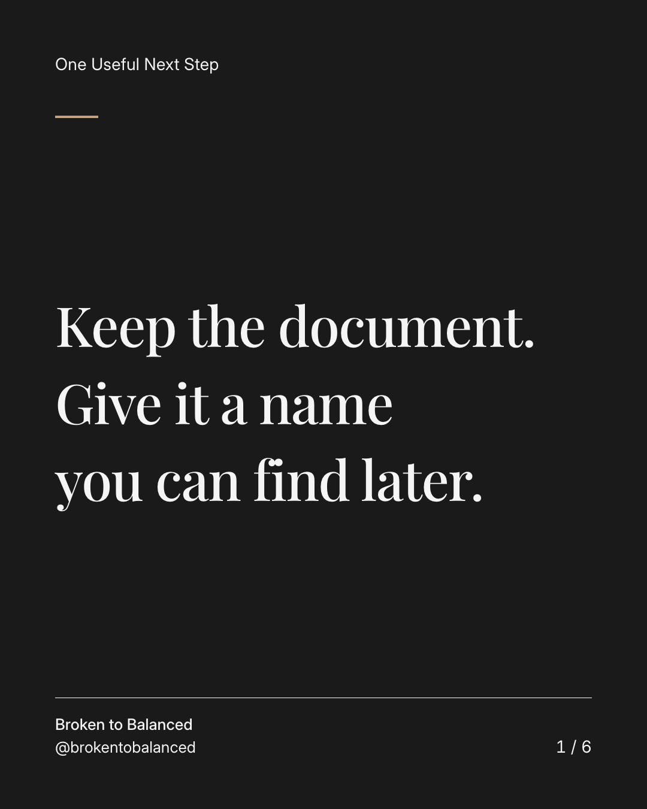
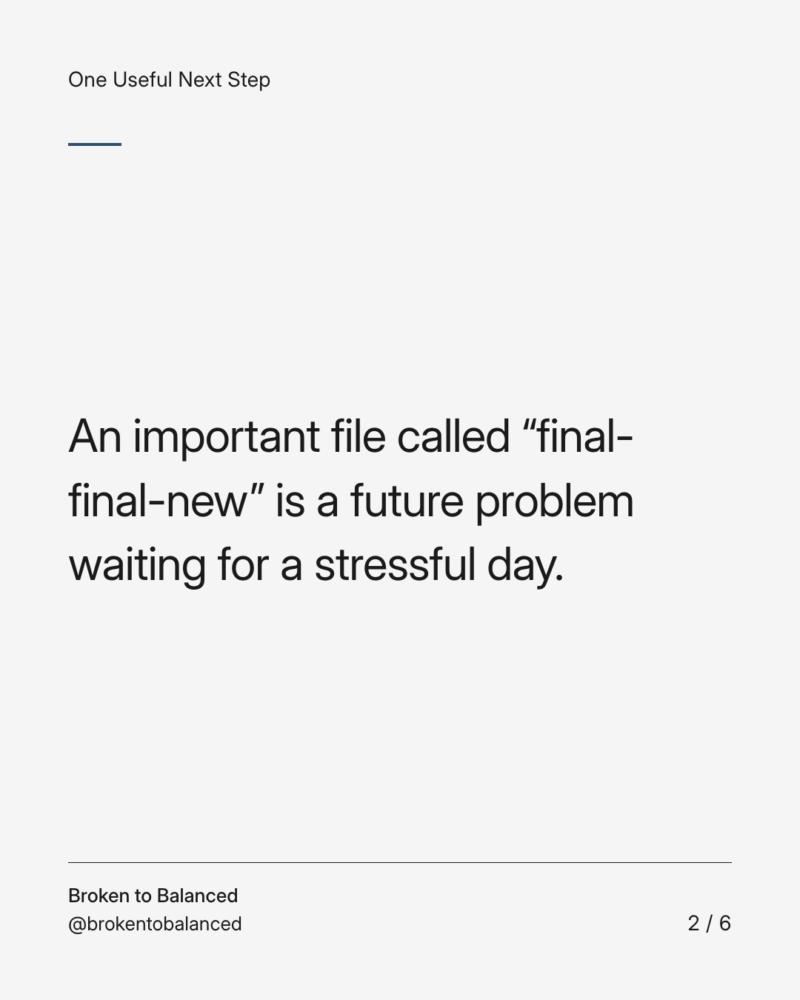
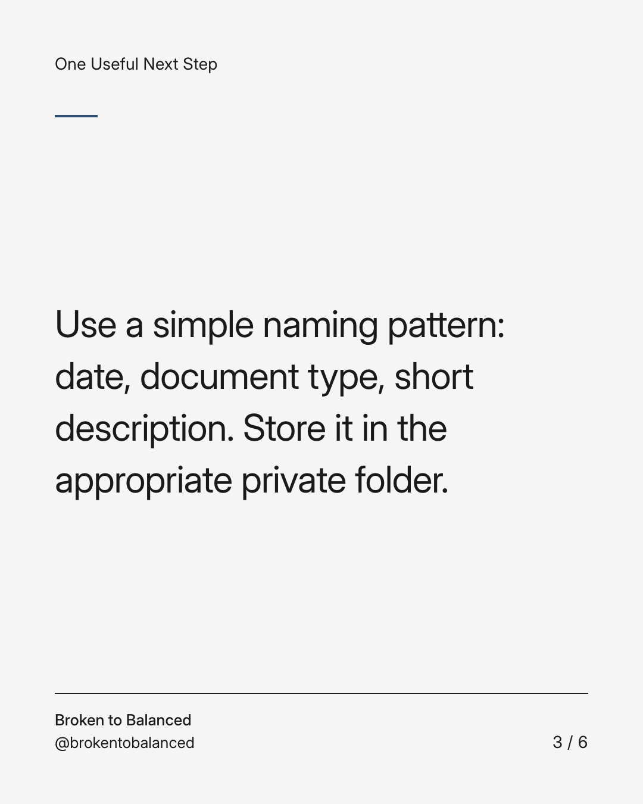
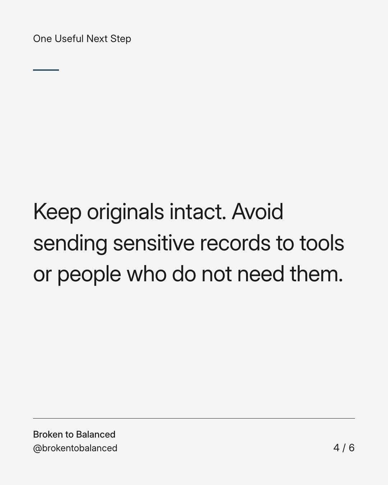
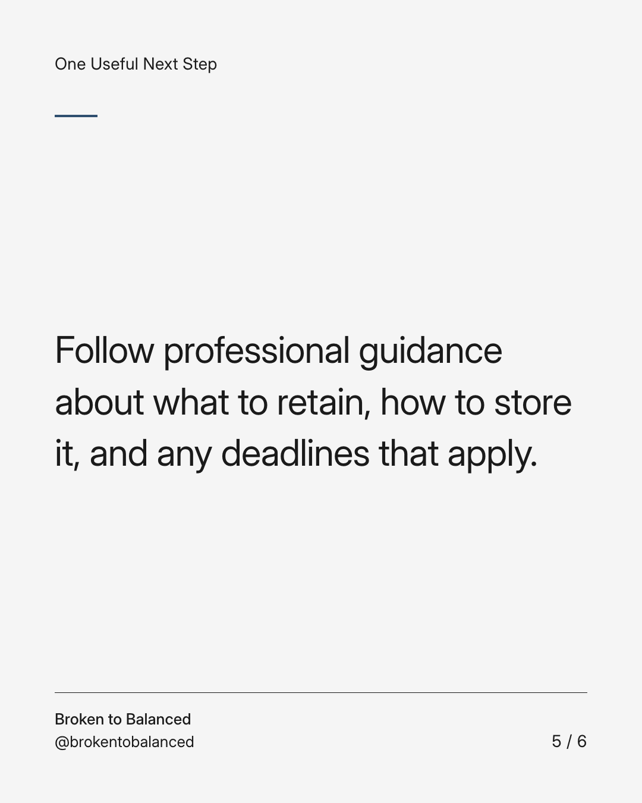
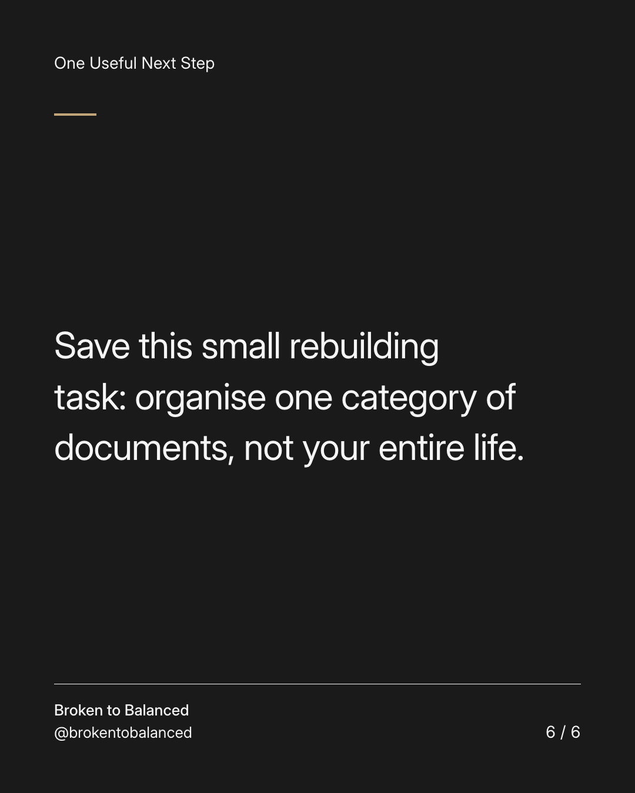

Exact text and accessibility text
Keep the document. Give it a name you can find later.
Slide 1 of 6. Keep the document. Give it a name you can find later.


Exact text and accessibility text
An important file called “final-final-new” is a future problem waiting for a stressful day.
Slide 2 of 6. An important file called “final-final-new” is a future problem waiting for a stressful day.


Exact text and accessibility text
Use a simple naming pattern: date, document type, short description. Store it in the appropriate private folder.
Slide 3 of 6. Use a simple naming pattern: date, document type, short description. Store it in the appropriate private folder.


Exact text and accessibility text
Keep originals intact. Avoid sending sensitive records to tools or people who do not need them.
Slide 4 of 6. Keep originals intact. Avoid sending sensitive records to tools or people who do not need them.


Exact text and accessibility text
Follow professional guidance about what to retain, how to store it, and any deadlines that apply.
Slide 5 of 6. Follow professional guidance about what to retain, how to store it, and any deadlines that apply.


Exact text and accessibility text
Save this small rebuilding task: organise one category of documents, not your entire life.
Slide 6 of 6. Save this small rebuilding task: organise one category of documents, not your entire life.
Exact caption
Plain-text fallback: select and copy the caption.